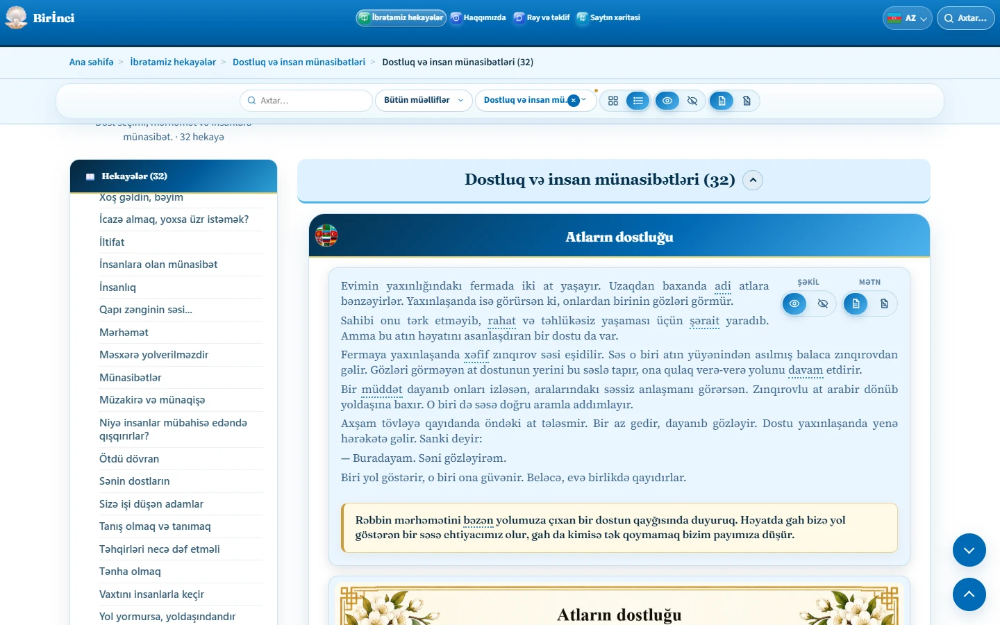

Hekayə mətni və illüstrasiyalar
Hekayə başlıqdan, əsas mətndən, ibrət hissəsindən və illüstrasiyadan ibarətdir. İbrət açıq krem rəngli paneldə vurğulanır. Hekayə səhifələrində illüstrasiyalar ilk açılışda görünür; onları görmək üçün əvvəlcə «Şəkli göstər» düyməsinə basmaq lazım deyil.
Şəkli gizlətmək üçün «Şəkli gizlət», geri qaytarmaq üçün «Şəkli göstər» seçin. Mətn üçün ayrıca göstərmə və gizlətmə düymələri var. Mətnlə şəkli eyni vaxtda gizlətmək olmaz: ən azı biri görünməlidir. Telefonda mətn idarələri gizlənə bilər və mətn oxumaq üçün açıq qalır.
Müəllif adı və konkret mənbə göstərilibsə, onları hekayənin yanında oxuyun. Bütün hekayələrin altında eyni ümumi mənbə qeydi təkrarlanmır. Saytın ümumi redaktə və süni intellektlə yaradılmış illüstrasiyalar haqqında qeydi giriş hissəsində ola bilər; bu, ayrıca hekayənin müəllif krediti ilə eyni deyil.
Hekayəyə keçdikdən sonra brauzerdəki ünvanı kopyalayaraq paylaşa bilərsiniz. Ünvanın sonundakı # işarəsi və hekayə identifikatoru saxlanmalıdır; məsələn, #friendship-of-horses.

